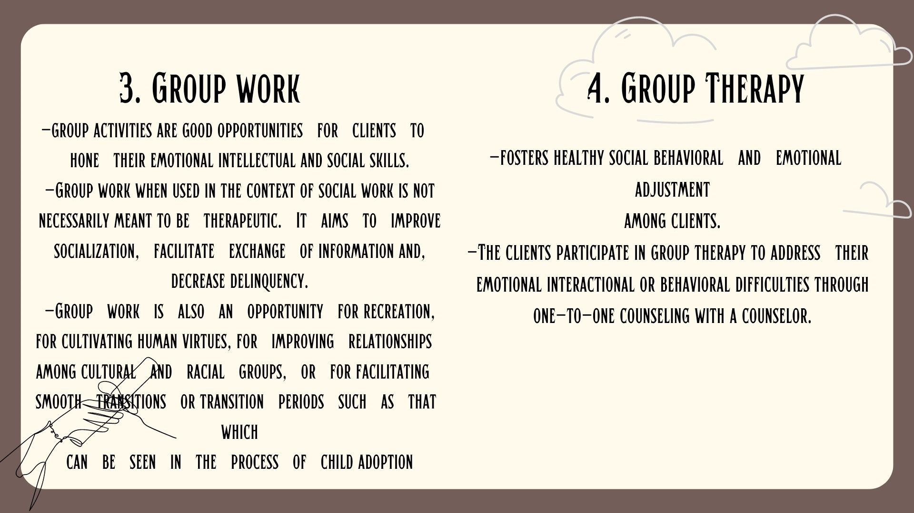
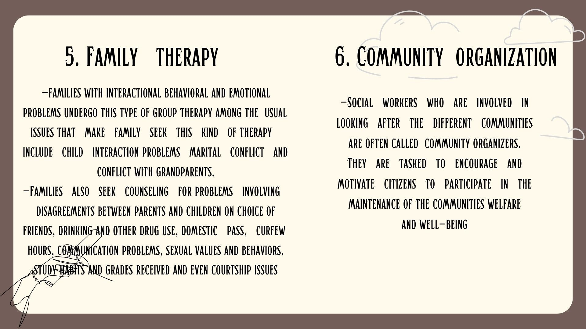
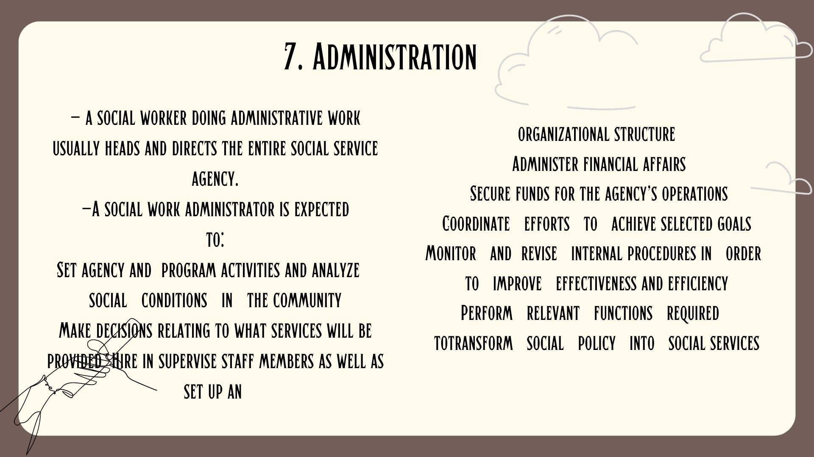

A social worker is a professional who is trained to assist individuals, families, groups, and communities in dealing with various social and emotional issues. Social workers aim to enhance people's well-being, promote social justice, and improve the overall quality of life for individuals and communities.
Social workers typically work in a variety of settings, such as hospitals, schools, government agencies, nonprofit organizations, and private practices. They may work with diverse populations, including children, adolescents, adults, older adults, individuals with disabilities, individuals experiencing homelessness, individuals with mental health challenges, and individuals facing various social and economic hardships.
2 TYPES OF SOCIAL WORKERS:
Direct-Service Social Worker
help people solve and cope with problems in their everyday lives
Clinical Service Social Worker
diagnose and treat mental, behavioural, and emotional issues
FUNCTIONS OF SOCIAL WORKERS
These speak of main activities professionally performed by social workers:
1. Counsel with individuals, facilitate groups, work with families, refine agency procedures,initiate new programs, lobby for legislative changes, organize community action, educate the public, conduct needs assessments and evaluate practice and programs at various systemlevels and targets of change or social transformation (counselor, initiator, facilitator,researcher, speaker)
2. Enhance social functioning of individuals, families, groups, organizations and communities (enabler)
3. Link clients systems with needed resources (broker)
4. Improve the operations of the social service delivery network
5. Promote social justice through development of social policy (advocate)
Roles Social Workers Have to Play:
Children
Community
Family services
Corrections
Medical clinics
Public assistance
Mental-developmental disabilities
Other disabilities
School Social Work
Aged
Substance abusers
Group services
Mental health
Occupational social work
Other disabilities
PARTICIPANTS OR RESISTERS
These are people who have been
referred to a social worker by a third party, usually a family member or a friend.
Models of a Social Worker’s Perspective
toward a Client (Gambrill, 1997)
Settings, Process, Methods, and Tools in Social Work
Social Problems and Social Services
Poverty and public welfare
Emotional problems and counseling
Family problems and services to families
Sexual orientation, sex variances and sex therapy
Drug abuse and drug treatment programs
Crime, juvenile delinquency, and correctional services
Social work usually follows a problem-solving approach when dealing with issues of individuals, families, groups,
organizations, and communities.
Professional Activities Provided by Social Workers
Some of the activities that encompass social work include:
Counseling runaway youths
Helping unemployed people secure training or employment
Counseling a suicidal person
Placing a homeless child in an adoptive or foster home
Providing protective services to abused children and their families
Finding nursing homes for stroke victims who no longer require hospitalization
Counseling individuals with sexual dysfunctions
Helping alcoholics to acknowledge that they have drinking problems
Counseling those with a terminal illness
Serving as probation or parole officer
Providing services to single parents
Working in medical and mental hospitals as a member of rehabilitation team



Competencies of Social Work
1. Handle case management with various clients and population groups.
2. Perform direct practice depending on the needs of the client and the environment in which
the social worker operate.
3. Conduct mediations among parties especially where one party is socially disadvantaged.
4. Make referrals to appropriate agencies and service sectors needed by the client.
5. In gerontological context, perform program planning and administration in numerous settings. Gerontology is the scientific study of old age, the process of aging, and the particular problems of old people.
6. In mental health setting, function as case managers, advocates, administrators, therapists and to use research as basis for problem-solving and choice of intervention in empirically based practice.
7. In school system, analyze the transactions between students, teachers, parents and the school system
8. In the judicial system, make the system more fair and beneficial to the convicted criminals and their victims.
9. Pursue social change on behalf of vulnerable and oppressed individuals, eliminating economic inequality and poverty.


models of.jpeg)